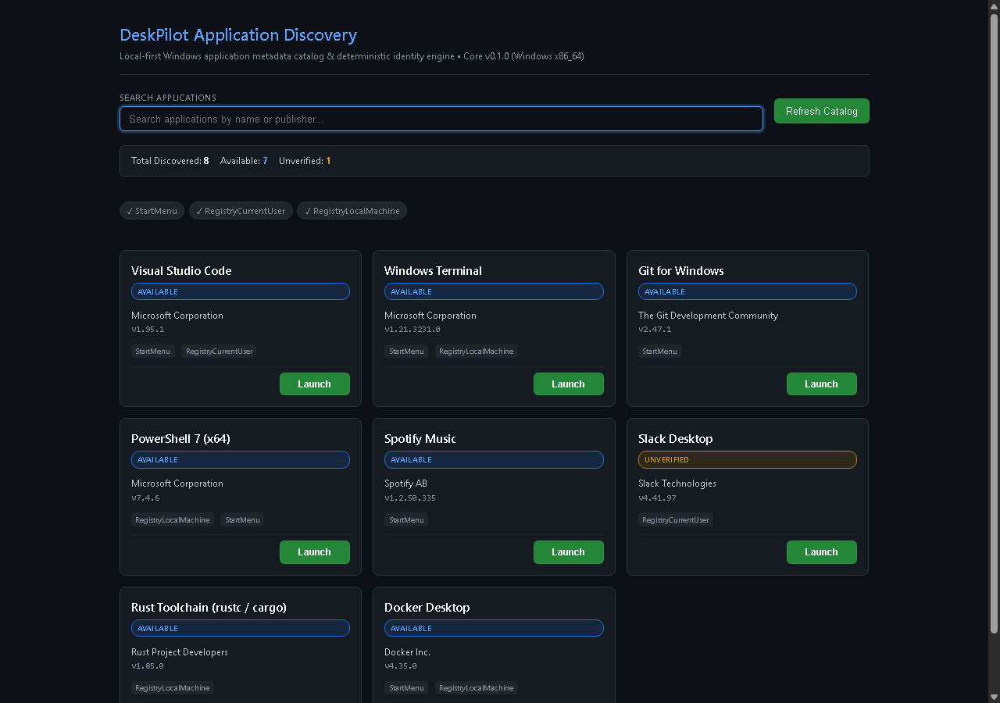
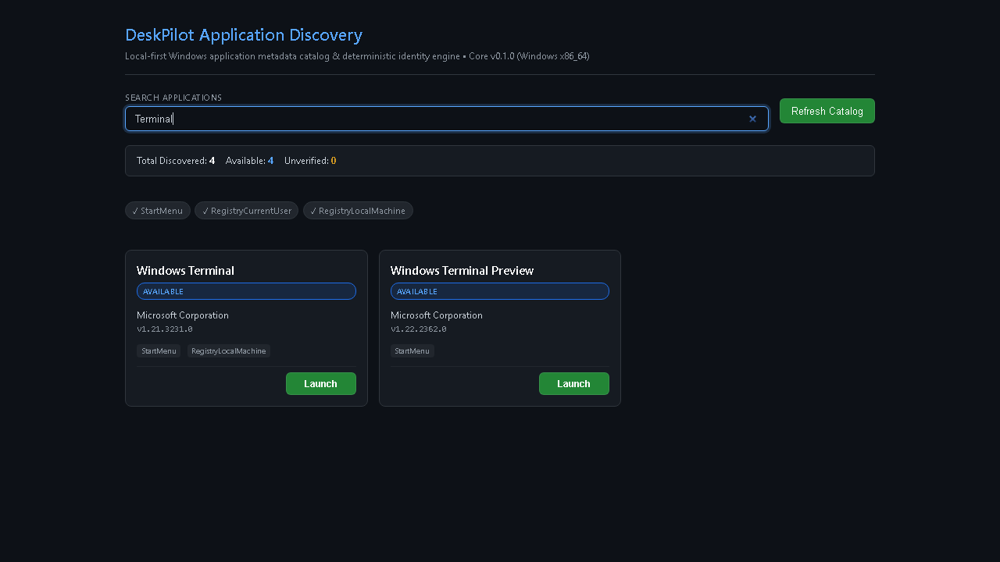

Your Windows desktop, under control.
DeskPilot brings deterministic application discovery and native Win32 process monitoring into one local desktop command center. Engineered with Rust, Tauri 2, and React 19 for maximum speed and privacy.
Production Windows Installer package built with WiX Toolset. Seamless per-user install and deterministic Windows Installer uninstallation.
Note: NSIS setup (.exe) is not offered because its uninstallation experience is unreliable under Windows Application Control policies.
Exhaustively enumerates 64-bit and 32-bit Windows Registry hives and Start Menu directories. Generates collision-resistant 128-bit identities to eliminate duplicate merge conflicts.
Instant search filtering using a deterministic hierarchy: exact match, prefix match, substring match, and publisher metadata. Fully navigable via keyboard shortcuts.
Bounded Top-K process telemetry using Toolhelp32 snapshots and least-privilege handles. Accurately tracks working-set memory and cumulative CPU time off the main UI thread.
100% local execution. No background tracking, analytics, or network calls. Direct Win32 process creation bypasses shell interpreters (cmd.exe / powershell.exe).


| Operating System | Windows 10 (64-bit) or Windows 11 Build 22621+ (x64) |
| Architecture | x86_64 / x64 |
| Web Runtime | Microsoft Edge WebView2 Evergreen Runtime (pre-installed on Windows 10 & 11) |
| Memory | Minimum 100 MB RAM free |
| Storage | 35 MB free disk space |
| Network Access | None required (entirely local-first) |
Download deskpilot_0.1.0_x64_en-US.msi from the download section above.
Open Windows PowerShell in your download folder and verify that the file's SHA-256 hash matches the published checksum:
Get-FileHash -Algorithm SHA256 .\deskpilot_0.1.0_x64_en-US.msi
Confirm the output matches: 93098705A694696D752EDE93E9F121758B2A5873F392E392B87F3C2617AF5ECD
Double-click deskpilot_0.1.0_x64_en-US.msi. If the SmartScreen prompt appears, click "More info" and then click "Run anyway".
For scripted or administrative deployments, install quietly via the native Windows Installer engine:
msiexec.exe /i .\deskpilot_0.1.0_x64_en-US.msi /qn
DeskPilot cleanly and completely uninstalls through standard Windows Settings (Settings > Apps > Installed Apps > DeskPilot > Uninstall) or via command-line:
msiexec.exe /x {9D976768-CC79-4F25-97BB-CBCF5A25B377} /qn
DeskPilot has zero network analytics, tracking beacons, or crash reporters. It does not phone home or transmit machine identifiers.
Applications are executed directly via Win32 CreateProcessW with discrete argument vectors, entirely bypassing cmd.exe and powershell.exe to prevent shell injection.
Process monitoring queries are strictly read-only using PROCESS_QUERY_LIMITED_INFORMATION. The software cannot terminate, suspend, or alter process priorities.
The presentation UI only references opaque 128-bit hashes and is completely isolated from privileged host system file paths.
Handle Unavailable badges with fallback placeholders, respecting Windows security boundaries.